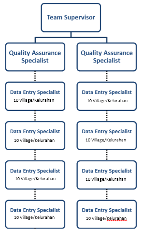

Metodologi Perencanaan Proyek Pemetaan dengan OpenStreetMap
Download page as PDFTujuan Pembelajaran:
- Memahami cara membuat kerangka kegiatan pemetaan
- Memahami cara pembagian arsip untuk masing-masing kelompok survei
- Memahami cara pembagian area survei berdasarkan batas administrasi
- Mengetahui cara pembagian kelompok yang efektif
Perencanaan proyek pemetaan memerlukan metodologi survei yang tepat dan efisien untuk mencapai target dan tujuan pemetaan. Indikator-indikator yang perlu diperhatikan dalam pembuatan metodologi survei meliputi: luas wilayah survei, jumlah tim pemetaan, jumlah objek yang dikumpulkan, dan pendanaan proyek. Jika luas wilayah semakin besar dan jumlah objek yang dikumpulkan semakin banyak, maka pendanaan proyek juga semakin besar.
Pada proyek pemetaan survei lapang akan dilaksanakan oleh tim pemetaan yang dibagi menjadi 3 (tiga) peran, yaitu :
- Mapping Supervisor = mengatur dan mengawasi jalannya proyek pemetaan, mempersiapkan keperluan pemetaan, membuat laporan hasil pemetaan dan memeriksa kualitas dan kuantitas data yang telah divalidasi oleh Quality Assurance.
- Quality Assurance= menjamin kuantitas dan kualitas data yang dihasilkan oleh data entry dan mengawasi data entry dalam melakukan survei lapangan.
- Data Entry = melaksanakan survei lapangan dan memasukkan data lapangan ke dalam OSM beserta digitasi bangunan dan jalan.
I. Pembuatan Kerangka Kerja
Perencanaan pemetaan memerlukan suatu kerangka kerja yang disesuaikan dengan indikator-indikator pemetaan yang telah disebutkan sebelumnya. Kerangka kerja tersebut dapat dijadikan acuan dalam pelaksanaan proyek pemetaan yang akan dimonitor oleh Mapping Supervisor dan Quality Assurance. Kerangka kerja secara garis besar terdiri dari:
- Persiapan proyek pemetaan
- Penentuan jumlah tim data entry dan tim quality assurance
- Pelaksanaan pelatihan OSM untuk tim pemetaan
- Proses pemetaan dan kegiatan mapathon
- Pelaksanaan pelatihan QGIS untuk tim pemetaan
- Pembuatan peta akhir
Sebagai contoh, dibawah ini merupakan kerangka kerja yang disusun untuk pemetaan di Kota Semarang tahun 2018 yang memiliki luas wilayah 373,8 km2 dengan jumlah data entry 16 orang dan jumlah quality assurance 4 orang. Infrastruktur yang dikumpulkan berjumlah 58 kategori objek meliputi jaringan jalan, sungai, tanggul dan fasilitas umum. Semua tahapan-tahapan pemetaan dilakukan selama 6 bulan.
Kerangka kerja pemetaan
a. Pelatihan OpenStreetMap dan QGIS untuk tim Pemetaan
Pelatihan ini dilakukan untuk memberikan pemahaman terhadap metode pemetaan, penggunaan alat-alat survei lapangan, dan pembuatan peta cetak hasil survei lapang. Berikut ini pelatihan yang dapat Anda persiapkan sebelum pemetaan berlangsung :
- Pelatihan OpenStreetMap untuk Data Entry dan Quality Assurance
Pelatihan dilakukan selama 3 hari, bertujuan untuk menggunakan alat-alat survei lapangan dan memasukkan hasil data survei ke dalam OpenStreetMap. Materi pelatihan yang diberikan, sebagai berikut:
- Memulai OpenStreetMap
- Pengoperasian JOSM
- Penggunaan Alat-Alat Survei (OpenMapKit, ODK Collect, OSMTracker, dan GPS)
- Praktik Survei Lapang
- Penggunaan Tasking Manager
- Memasukkan Hasil Survei ke dalam OSM dengan menggunakan JOSM
- Download Data OSM dengan Export Tool
- Pelatihan Validasi Data untuk Quality Assurance
Pelatihan dilakukan selama 2 hari, bertujuan untuk melakukan validasi data yang sudah dimasukkan oleh data entry ke dalam OpenStreetMap. Materi pelatihan yang diberikan, sebagai berikut:
- Validasi Data OSM menggunakan JOSM
- Validasi Data OSM menggunakan Tasking Manager
- Membuat Batas Administrasi dengan Relasi
- Pelatihan QGIS untuk Data Entry dan Quality Assurance
Pelatihan dilakukan selama 1 hari, bertujuan untuk membuat peta hasil survei lapang yang telah divalidasi oleh Quality Assurance dan Mapping Supervisor. Materi pelatihan yang diberikan, sebagai berikut:
- Download dan Install QGIS
- Persiapan data
- Analisis Vektor
- Pembuatan peta dengan Map Composer
b. Persiapan Mapathon
Mapathon adalah pemetaan yang dilakukan secara bersama-sama secara partisipatif dengan menggunakan tasking manager. Anda dapat bekerja sama dengan pihak universitas untuk membantu memetakan bangunan dan jalan di wilayah pemetaan Anda. Hal ini sangat efektif untuk membantu pemetaan sehingga data entry dapat berfokus pada survei lapangan dan mempersingkat durasi pemetaan. Juga dapat menjalin kerjasama guna keberlanjutan data OpenStreetMap di wilayah tersebut. Kegiatan mapathon dapat dilakukan selama 3 hari, dengan kegiatan di hari pertama diisi dengan pelatihan, kemudian hari kedua dan ketiga diisi dengan kegiatan pemetaan.
II. Pembuatan Timeline Survei Pemetaan
Timeline survei pemetaan berbeda dengan kerangka kerja yang sebelumnya telah dibahas, pada bagian ini akan ditekankan bagaimana Anda dapat mengatur dan mengawasi pelaksanaan survei lapangan. Secara garis besar timeline pemetaan terbagi menjadi tiga bagian, yaitu :
1. Sebelum Survei Pemetaan
Pada tahapan ini, kegiatan yang dilakukan akan berfokus pada persiapan peralatan survei. Peralatan survei lapangan terdiri dari GPS, smartphone dan peta cetak. Semua peralatan itu harus dipersiapkan sebelum survei pemetaan dilaksanakan oleh data entry. Pada smartphone akan dipasang aplikasi ODK Collect, OpenMapKit (OMK), dan OSMTracker, dimana aplikasi OMK membutuhkan dua jenis data yang harus dipersiapkan yaitu batas administrasi dalam format .osm dan citra satelit dalam format .mbtiles. Peran mapping supervisor sangat dominan di dalam bagian sebelum survei pemetaan, dimana mereka harus mempersiapkan peralatan yang diperlukan dalam pemetaan. Persiapan survei pemetaan terdiri dari:
- Membuat MBTiles untuk citra satelit
- Membuat peta survei berdasarkan batas administrasi
- Membuat panduan survei pemetaan
Contoh Tabel Timeline Pemetaan Tahap Sebelum Survei
| No | Timeline | Tim Surveyor | Kec | Jumlah Kel | Kel | Jumlah RW | MBTiles | Peta Kel (satelit) | Peta Kel (OSM) |
|---|---|---|---|---|---|---|---|---|---|
| 1 | Feb - Mar | A | Candisari | 3 | Candi | 11 | v | v | v |
| 100% Dipetakan | Jatingaleh | 10 | v | v | v | ||||
| 100% Divalidasi | Jomblang | 10 | v | v | v | ||||
| 2 | Feb - Mar | B | Banyumanik | 3 | Sumurboto | 5 | v | v | v |
| 100% Dipetakan | Ngesrep | 11 | v | v | v | ||||
| 100% Divalidasi | Gedawang | 10 | v | v | v |
*Pengisian dilakukan oleh Mapping Supervisor
b. Survei Pemetaan
Pada saat proses survei pemetaan, masing-masing tim memiliki peran agar survei pemetaan dapat terlaksana dengan baik, yaitu:
- Data Entry = mempersiapkan peralatan survei pada smartphone, melaksanakan survei, memasukkan data survei dan meng-upload ke dalam OSM, digitasi bangunan dan jalan dengan menggunakan JOSM.
- Quality Assurance = memastikan dan mengawasi kualitas data yang telah di-upload oleh data entry, memastikan dan mengawasi pelaksanaan survei yang dilakukan oleh data entry di lapangan, serta mengatur strategi kegiatan survei lapangan bersama data entry.
- Mapping Supervisor = memastikan kualitas dan kuantitas data serta memantau pelaksanaan survei yang disesuaikan dengan timeline yang telah ditetapkan.
Contoh Tabel Timeline Pemetaan Tahap Survei Pemetaan
|PERSIAPAN HP| | SURVEI | | | | | INPUT | | | | | | |—|—|—|—|—|—|—|—|—|—|—|—|—| |input mbtiles|clear file manager|Tgl Survei|Tgl Survey Batas RW|Infrastruktur|Posko|Jalur Evakuasi|Upload track|Kirim form ke OMK Server|Infrastruktur|RW|Jalur Evakuasi dan Posko|Tgl Validasi Data| | v | v | 1,5-6 Mar 2018 | 1 Mar 2018 | v | Ada | Tidak Ada | v | v | v | v | v | 26 Mar 2018 | | v | v | 12 Feb 2018 | 12 Feb 2018 | v | Ada | Tidak Ada | v | v | v | v | v | 14, 19 Feb 2018 | | v | v | 8,12-14 Mar 2018 | 12 Mar 2018 | v | Ada | Tidak Ada | v | v | v | v | v | 27-28 Mar 2018 |
c. Setelah Survei Pemetaan
Jika seluruh proses pemetaan sudah selesai, maka mapping supervisor dan quality assurance harus memastikan keseluruhan data yang dimasukkan ke dalam OSM memiliki kualitas yang baik dan bebas dari kesalahan. Langkah selanjutnya adalah pembuatan peta akhir yang diberikan untuk pemerintah lokal yang terlibat dalam proses survei lapangan.
Contoh Tabel Timeline Pemetaan Tahap Setelah Survei
| Validasi Batas Administrasi | Perhitungan Kuantitas Data | Perhitungan Kualitas Data | Peta Cetak dan Distribusi |
|---|---|---|---|
| v | v | v | v |
| v | v | v | v |
| v | v | v | v |
Contoh kelengkapan timeline pemetaan dapat diunduh di tautan berikut https://tinyurl.com/timeline-pemetaan
III. Pembuatan dan Pengaturan Folder Kerangka Kerja Pemetaan
Dalam mengatur dan memantau kerangka kerja pemetaan, Anda memerlukan suatu tempat penyimpanan data yang terorganisasi dan mempermudah pendistribusian ke semua pihak yang terlibat dalam proyek pemetaan. Hasil pemetaan terdiri dari data spasial yang akan di-upload ke dalam OpenStreetMap. Data tersebut akan di download kembali dan disimpan dalam beberapa format data spasial yang disesuaikan dengan output pemetaan.
Database dapat disimpan dalam bentuk file digital yang bersifat online, agar mudah pendistribusian kepada data entry dan quality assurance. Nantinya data tersebut akan dipantau juga oleh mapping supervisor, sebagai pengecekan dan perhitungan untuk kalkulasi data.
Tempat penyimpanan yang mudah dari segi penggunaan dan pengaplikasian yaitu google drive. Google drive dapat menyimpan berbagai jenis data dan dapat dibagikan kepada semua orang. Mapping supervisor dapat membuat suatu folder didalam google drive yang terdiri dari:
Contoh Tabel Folder Proyek Pemetaan
| Nama Folder | Deskripsi |
|---|---|
| Timeline | Kerangka kerja dan timeline survei pemetaan |
| Training | Agenda pelatihan dan materi pelatihan |
| Tim Pemetaan | Daftar nama tim pemetaan (data entry, quality assurance, dan mapping supervisor) |
| Data Survei | Hasil pemetaan OpenMapKit (OMK) dan ODK Collect, batas administrasi, tempat pengungsian, jalur evakuasi, dll. |
| Dokumentasi Survei | Foto dan video selama kegiatan survei |
| Peta | Peta survei, fieldpapers, dan peta hasil |
| Laporan | Laporan perbulan yang dibuat oleh quality assurance dan mapping supervisor |
| Kualitas Data | Perhitungan kualitas data yang dihasilkan sebelum dan sesudah pemetaaan |
| Kuantitas Data | Perhitungan kuantitas data yang dihasilkan sebelum dan sesudah pemetaaan |
| OMK Equipment | Peralatan survei yang dibutuhkan oleh OMK seperti MBTiles |
Data-data digital harus di-upload ke dalam folder tersebut seiring dengan berjalannya proyek pemetaan, agar data tersebut dapat di-backup dengan baik dan tidak ada data yang hilang atau rusak.

Contoh folder di dalam Google Drive
IV. Pembagian Wilayah Survei Berdasarkan Batas Administrasi
Luas wilayah, topografi, dan penggunaan lahan suatu wilayah sangat menentukan pembagian wilayah dan durasi pemetaan dalam survei. Pembagian wilayah dapat dibagi berdasarkan unit terkecil dari wilayah administrasi misalnya tingkat kelurahan. Jika Anda telah memiliki batas-batas kelurahan yang ada di dalam wilayah tersebut, maka Anda dapat memperhatikan aspek selanjutnya yaitu topografi dan penggunaan lahan.
Misalnya pemetaan yang dilakukan di Kota Semarang memiliki luas wilayah 373,8 km2 yang terdiri dari 16 kecamatan dan 177 kelurahan. Topografi yang dimiliki Kota Semarang mempengaruhi karakteristik wilayahnya yang terbagi menjadi dua bagian yaitu wilayah pesisir (Semarang Bawah) dan wilayah perbukitan (Semarang Atas). Wilayah semarang bawah merupakan pusat aktivitas perekonomian, pemerintahan, dan permukiman. Sedangkan wilayah Semarang Atas merupakan perkembangan permukiman, fasilitas pendidikan, dan perkebunan. Oleh karena itu, Semarang bawah memiliki infrastruktur yang lebih padat dibandingkan dengan Semarang atas.
Analisis ketinggian wilayah dapat mempengaruhi dalam hal rute perjalanan saat data entry melaksanakan survei lapangan karena masing-masing wilayah padat pemukiman dan wilayah perbukitan memiliki hambatan tersendiri. Faktor lainnya yang harus diperhatikan yaitu kondisi cuaca saat pemetaan dilakukan, musim hujan dapat menjadi penghambat survei lapangan, terutama di wilayah yang rawan banjir. Jika curah hujan tinggi, Anda dapat mengarahkan data entry ke lokasi yang tidak rawan banjir terlebih dahulu.
Setelah Anda mengetahui faktor-faktor yang menentukan durasi pemetaan, Anda dapat membagi wilayah survei berdasarkan batas administrasi kecamatan atau kelurahan. Misalnya satu kecamatan dapat diselesaikan dalam waktu satu bulan dan dikerjakan oleh satu tim kelompok survei yang terdiri dari beberapa orang data entry. Berdasarkan analisis tersebut, pemetaan di Kota Semarang dapat diselesaikan dalam waktu 4 bulan dengan melibatkan 16 orang data entry.
Tahapan pembagian wilayah untuk bulan pertama dapat dilakukan dengan area yang dekat dengan basecamp/kantor agar memudahkan dalam hal koordinasi penggunaan alat yang dilakukan oleh data entry. Jika data entry menemukan masalah di lapangan, maka mereka dapat kembali ke kantor dengan jarak yang tidak terlalu jauh dari lokasi survei.
Peta timeline pemetaan Kota Semarang
Pada peta perencanaan pemetaan Kota Semarang dibawah ini, dibagi menjadi dua bagian berdasarkan karakteristik wilayah, sehingga diperlukan dua orang mapping supervisor untuk mengatur dan memantau kegiatan pemetaan.
Peta pembagian wilayah Kota Semarang
Contoh Tabel Timeline Pembagian Wilayah
| Timeline | Wilayah Kecamatan | Mapping Supervisor Utara - Semarang Bawah | Mapping Supervisor Selatan - Semarang Atas |
|---|---|---|---|
| Tahap 1 (1,5 Bulan) | Kecamatan yang dekat dengan kantor/basecamp. Misalnya berjarak kurang dari 20 km dari kantor | Kec Semarang Barat | Kec Candisari |
| Kec Semarang Tengah | Kec Semarang Selatan | ||
| Kec Semarang Timur | Kec Gayamsari | ||
| Kec Semarang Utara | Kec Gajah Mungkur | ||
| Tahap 2 (2,5 Bulan) | Kecamatan lebih dari 20 km | Kec Ngaliyan | Kec Banyumanik |
| Kec Pedurungan | Kec Tembalang | ||
| Kec Tugu | Kec Mijen | ||
| Kec Genuk | Kec Gunung Pati |
V. Pembagian Kelompok Tim Pemetaan
Aspek pembagian wilayah sangat menentukan dalam pembagian kelompok survei, terutama untuk pendistribusian data entry. Anda dapat memilih berdasarkan orang-orang yang sudah mengenal wilayah tersebut. Untuk mendapatkan informasi tersebut, Anda dapat mencantumkan pertanyaan wilayah mana saja yang mereka pahami pada saat tahap penerimaan data entry yang baru. Berdasarkan pembagian wilayah yang sudah dijelaskan sebelumnya, maka tim pemetaan memiliki bagan sebagai berikut:

Bagan pembagian kelompok
Tabel Pembagian Kelompok Berdasarkan Wilayah Survei
| Mapping Supervisor | Quality Assurance | data entry | Kecamatan | Jml Kelurahan | Total Kelurahan |
|---|---|---|---|---|---|
| Mapping Supervisor 1 | QA1 | DE1 | Candisari | 7 | 21 |
| DE2 | Mijen | 14 | |||
| DE3 | Semarang Selatan | 10 | |||
| DE4 | Banyumanik | 11 | |||
| QA2 | DE5 | Gayamsari | 7 | 23 | |
| DE6 | Gunung Pati | 16 | |||
| DE7 | Gajah Mungkur | 8 | 20 | ||
| DE8 | Tembalang | 12 | |||
| Mapping Supervisor 2 | QA3 | DE9 | Semarang Barat | 16 | 23 |
| DE10 | Tugu | 7 | |||
| DE11 | Semarang Tengah | 15 | 25 | ||
| DE12 | Ngaliyan | 10 | |||
| QA4 | DE13 | Semarang Timur | 10 | 23 | |
| DE14 | Genuk | 13 | |||
| DE15 | Semarang Utara | 9 | 21 | ||
| DE16 | Pedurungan | 12 |
RINGKASAN
Jika Anda dapat mengikuti dan memperhatikan seluruh tahapan dalam bab ini, maka Anda telah berhasil membuat perencanaan proyek pemetaan yang nantinya dapat diaplikasikan ketika survei pemetaan berlangsung. Perencanaan proyek yang tepat akan menghasilkan kualitas dan kuantitas data yang maksimal.